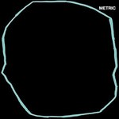

Quick Takes (August/September 2018)
Welcome to our latest edition of Quick Takes!
I do want to mention that it hasn't been the smoothest year for the ongoing feature, given that a few unexpected changes have made it harder to hit the typical 8 to 10 reviews a month format. That said, there are no plans to kill the feature - if anything, it will continue to thrive despite its more unconventional release pattern. Since I wasn't able to hit the month of August as planned (well, more like I didn't want to release it just by myself), I decided to bring along a handful of regular staff writers to contribute. I'm happy to share that all three writers on board, Sean, Peter and Joe, have collaborated in the past, and I'm sure you'll continue to see their names pop up in future installments. So this one covers two months in one, but hey, at least there's a total of 12 reviews! Lots of great albums to recommend here, so let's get to it.
What were your favorite albums during the month of August and September? Anything we didn't get to review that we should've? You can always reach us on Facebook, or on our official twitter page. Juan
...
 Bliss Signal
Bliss Signal
self-titled
(New Panther Sounds)
Hey, what do black metal and electronic trance music have in common? I’d be hard pressed to verbally express what the connection is, and most would probably laugh at the comparison outright. If asked now, however, all I’d need to do is point them to Bliss Signal, a duo comprising of, quite literally, a black metal artist and an
experimental electronic artist. Their self-titled debut - a brief but dense collection of fog-shrouded instrumentals - proves the compatibility of its influences in an almost entirely tonal sense. The album’s 8 tracks do less to transcend their respected genres than to find a sensible middle ground between the two, and while some tracks
achieve this on their own, most play it safe on one side predominantly. But whether the focus is on serene synths or blackened guitars, the album finds a centralized gloomy mood that cements the album as its own world. [7/10] Peter Quinton
 Gouge Away
Gouge Away
Burnt Sugar
(Deathwish)
Though they take their name from a Pixies classic, Gouge Away do a far more vivid job of living up to the name. Let the snarling beasts of its cover be a warning - Burnt Sugar, the Floridian hardcore band's sophomore breakthrough - is out for blood. Woodchipper guitars, calamitous riffs and vocalist Christina Michelle’s unrelentingly intense screams and lyrics subjects listeners through a gauntlet that can be both emotionally draining and revelatory. It’s an album where lines like “Paranoia comes knocking / She’s my only friend” and “But you begged God for mercy, just to find that she is me” are delivered with equal doses of venom, sincerity and a life-affirming desperation to be heard. And with the album succeeding in marrying both breakneck hardcore immediacy with nuanced songcraft, the terms become all the more clear: Gouge Away will be heard, and there’s nowhere you can hide. [8/10] Peter Quinton
 KEN Mode
KEN Mode
Loved
(Season of Mist)
While its abrasive nature is undeniably tied to the late 80s/early 90s onslaught of sound pollutant rock cultivated by indie labels like Sub Pop, Amphetamine Reptile and Touch and Go, KEN mode’s Loved spews enough corrosive vitriol and sturdy arrangements to sound peer-worthy as opposed to plagiarist. Following the more hook-laden, high energy pummeling of the Steve Albini-produced Blessed, Loved owes more to Unsane’s cathartic racket and the absurdist rock of Cows, hitting the near-metallic grind and collapse with He Doesn’t Feel Pain Like He Should along with the melting bass riff and the out-of-nowhere brass in The Illusion Of Dignity. With producer Andrew Schneider tweaking the knobs, his experience producing Unsane certainly applying here, KEN mode elevates their sonic outcry, hitting levels of discomfort with the subtly seasick Learning To Be Too Cold, thrash-bred Not Soulmates, and the manic combination of sounds in Fractures In Adults. [8/10] Sean Caldwell
 Marissa Nadler
Marissa Nadler
For My Crimes
(Sacred Bones)
Marissa Nadler's songs of love and anguish always take on different temperaments despite her even-tempered complexion. But after she signed to Sacred Bones, the Boston singer-songwriter began to shade her intricate fingerpicking with more of a gothic flavor; after two albums of a similar vein, it also felt like it was also a good time to adopt a different approach. In For my Crimes, Nadler embraces the fruits of collaboration with a quietly bolder, more sculpted vision. Featuring indie-centric vocalists (Angel Older) and classically-trained composers (Mary Lattimore) alike, the spacious despondency of Crimes contains the same kind of cryptic imagery she's known for, but there's also a surprising levity in how her haunting vocals brush against some of her most life-affirming choruses yet. Nadler is technically less alone, accompanied by a reliable cast of characters, but their inclusion is a virtue considering a simpler layout might've given the album a more distancing effect. It takes some time to absorb, but once it does the emotion it conveys is stunning. [8/10] Juan Edgardo Rodríguez
Metric
Art of Doubt
(MMI/Crystal Math Music)
One is quick to believe that Metric are jumping on the political bandwagon in Art of Doubt, except that this is exactly how they started back in 2003. It was a different time, sure, but the Toronto quartet relishes the opportunity to go back to the classic new wave that fortified their mission statement in the first place. For fifteen years, Metric have teetered between analog and synthetic sounds, sometimes on either extreme, but often conflating both with a racing heart. This is one of those times, given that they sound positivity huge. Emily Haines’s mellifluous voice carries every big and anthemic moment with towering force, aiming for the back seats as if invoking the gods of stadium rock before it inevitably becomes a thing of the past. Stay for Risk and the title track, both of which demonstrate their timeless songcraft with rousing abandon. But as it is with albums that go a little over the hour mark, Haines dwells in some synth-driven soul-searching that should’ve been cast aside for a different project. Still, the slick, forceful Art of Doubt accurately identifies where their true strengths lie. [7/10] Juan Edgardo Rodríguez
 Nick Cave & the Bad Seeds
Nick Cave & the Bad Seeds
Distant Sky (Live at Copenhagen)
(Bad Seed Ltd.)
It’s both mind-boggling and not surprising at all that Nick Cave is still at his peak. After all, his entire career has been about defying the odds and doing things his way. The four live tracks on Distant Sky, from a 2017 show in Copenhagen, show why Cave and the Bad Seeds are a must-see experience. Just this performance of Jubilee Street is worth the price of this EP. While on record, the song simmers to a boil, live, it explodes. Cave sings like a man possessed as the band rips through the tune behind him. Both From Her to Eternity and The Mercy Seat hit as forcefully as they did when first released. Cave snarls his way through the former as the music howls and collapses. The latter finds balance between triumph and chaos, building until it threatens to topple over. But the most powerful moment is in the titular track. Joined by soprano singer Else Torp, the music gently lies back, letting Cave’s haunting yet hopeful words ring out. Whether they arrive with a bang or a breeze, Cave’s songs remain among the most impactful in all of music. [9/10] Joe Marvilli
Nothing
Dance on the Blacktop
(Relapse)
Nothing contrast the tragedies they face with walls of astral distortion in Dance on the Blacktop. Led by songwriter Dominic Palermo, the Philadelphia post-shoegaze band has centered their themes around his continual tragedies, which range from doing time in prison and his mother's passing to, most recently, a CTE diagnosis. Palermo has had it rough, to say the least, but there's a graceful lucidity to his songs, as if writing music is his way of controlling the chaos that surrounds him. His approach to nineties alternative rock hasn't changed too much since their debut album, Guilty to Everything, and perhaps that repetition is there because it's the one unabating activity in his life. But there are some minor changes to behold - he's steadily lightened the tone of his open-hearted choruses, not to mention how Jon Agnello's crisp, no-frills production style adds a brighter sheen over the quartet's winding metallic riffs. But Dance is best enjoyed when you accept its familiar pleasures - it bursts with pure deliverance, coming from a band that refuses to hang in life support. [7/10] Juan Edgardo Rodríguez
 Pale Waves
Pale Waves
My Mind Makes Noises
(Dirty Hit Limited)
From their aesthetic, you’d expect Pale Waves’ debut album to be a modern goth revival. But it will take less than a minute into Eighteen to dissuade you of that notion. This is a pure pop record, through and through. There’s plenty of great pop music out there. However, Pale Waves fall short. Their style fits in between Chvrches and Taylor Swift’s 1989, though not up to that level of craft. Interesting moments, like the echoing guitar of There’s A Honey or the finger-snap rhythm of Loveless Girl, are drowned out by overstuffed songs with unmemorable melodies. Only a couple of songs show potential beyond the standard pop tunes. The minimalist synth of She blooms into an excellent, pure 80s rock solo. Karl (I Wonder What It's Like to Die) hits hard, as singer Heather Baron-Gracie pays tribute to her granddad over a melancholy acoustic melody. These two songs, and some other moments, show the potential of Pale Waves. But it will take stronger songwriting and a less busy sound for them to stand out. [3/10] Joe Marvilli
 Pig Destroyer
Pig Destroyer
Head Cage
(Relapse)
After over two decades of assaulting eardrums and dismantling genre confines more than any band in their class, Pig Destroyer have once and for all made “grindcore” totally obsolete in describing their titanic perfection of extreme metal. Don’t let your guard down, though, because their latest, Head Cage, will still fuck you up. But across Head Cage’s 12 tracks (yes, 12, not 25), Pig Destroyer focus not on being the fastest, loudest, craziest band on Earth, but on simply doing it better. They still do all of the aforementioned better than anyone else (Dark Train, Trap Door Man), but more often than not, they take that intensity and lock it into steadier groves, shifting moods and hookier riffs, from the fist-pumping Circle River to the lurching Torture Fields. There’s nothing these guys can’t do at this point, as long as it involves tearing listeners limb from limb in the process. [8/10] Peter Quinton
 Shy Boys
Shy Boys
Bell House
(Polyvinyl)
There's a precious kinship at work in Shy Boys' second effort, Bell House. The Kansas City quintet - who are made up of brothers and close friends - share a musical commonality in how they pair up their vast influences to distill them into a unique indie pop style. Led by their charmingly amateurish harmonies, the band is informed by early aughts rock revivalism with a vintage touch: a song like Take the Doggie sounds like a sped-up Vampire Weekend track as if interpreted by Nick Lowe, while the slow-burning title track evokes seventies singer-songwriter folk as they tip their hat to early Shins records. And that's just scratching the surface: their willingness to explore can sometimes overwhelm their songs, though that may work to their benefit once they focus on a more unified record. Bell House covers many musical facets, both old and new, but what it truly showcases is Shy Boys' growth and malleability as songwriters. [6/10] Juan Edgardo Rodríguez
THOU
Magus
(Sacred Bones)
If anything can be said about Magus, the fifth studio LP from Baton Rouge doomslayers Thou, there isn’t a single aspect of this record that isn’t pushed well into the red. Preceded by three EPs released earlier this year, The House Primordial, Inconsolable and Rhea Sylvia Magus swells with an expectedly melancholic intensity, its doom-n-blues elevated by a captivating and immense array of riff-dominate thoroughfares which are navigated with an effortless fluidity. Though much of Magus is set to a crawl, not much by way of variation in speed or any true percussive irregularity, you can hear ideas being explored, songs like Inward mutating over the course of its 11 minutes, while Elimination Rhetoric basks in the gloriousness of its immensity. Without much by way of respite from volume, though the lovely intro to Sovereign Self produces such a moment, Magus captures well the force of its players throughout its near 90-minute runtime, the culmination of which occurs in the album’s final track, Supremacy. [9/10 - Believe the Hype] Sean Caldwell
YG
Stay Dangerous
(Def Jam)
YG is going through an alarming identity crisis in Stay Dangerous. On his last effort, Still Brazy, the Compton rapper fully revived the G-funk sound with holier-than-thou reverence when some of his West coast contemporaries tackled it with a tinge of discretion. But as it is with rappers who initially stepped aside from the "trap" wave, it'd be inevitable that YG would try to keep up with the times. The issue with Still Dangerous is that he doesn't fully commit to any given sound - he awkwardly stumbles as if reading a nursery rhyme while held captive in Handgun, and when he regains his time keeping in Can't Get in Kanada, the ear-shrilling hi-hats overwhelm his lazy slurs. There's some of that YG magic in Power, where he interpolates his paranoia with both women and gang life with salaciously comic effect. But otherwise, Stay Dangerous is an off-the-cuff chronicle of an artist who's gotten too big - at least in his mind - for his own good. [6/10] Juan Edgardo Rodríguez